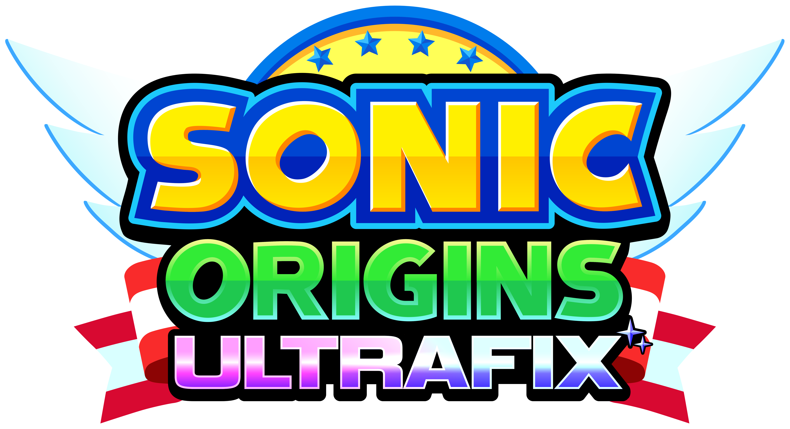

Sonic Origins Ultrafix é um mod para Sonic Origins e Sonic Origins Plus que adiciona 900 mudanças no jogo para transformá-lo na melhor forma de jogar os jogos clássicos.
Ele é compativel somente com a versão da Steam do jogo.
Sonic Origins Ultrafix é um mod para Sonic Origins e Sonic Origins Plus que adiciona 900 mudanças no jogo para transforma-lo na melhor forma de jogar os jogos clássicos.